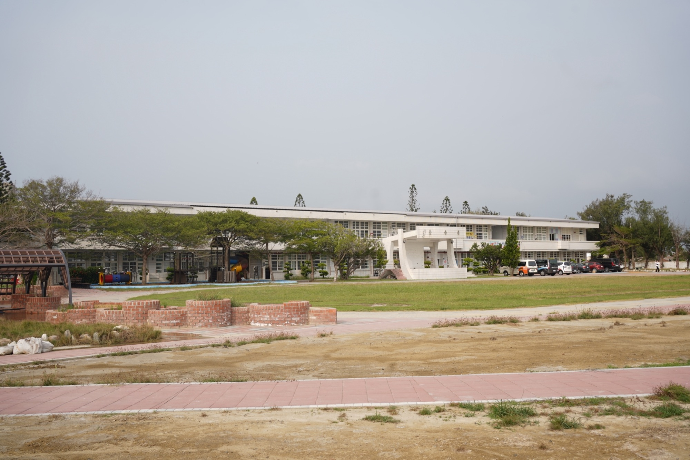
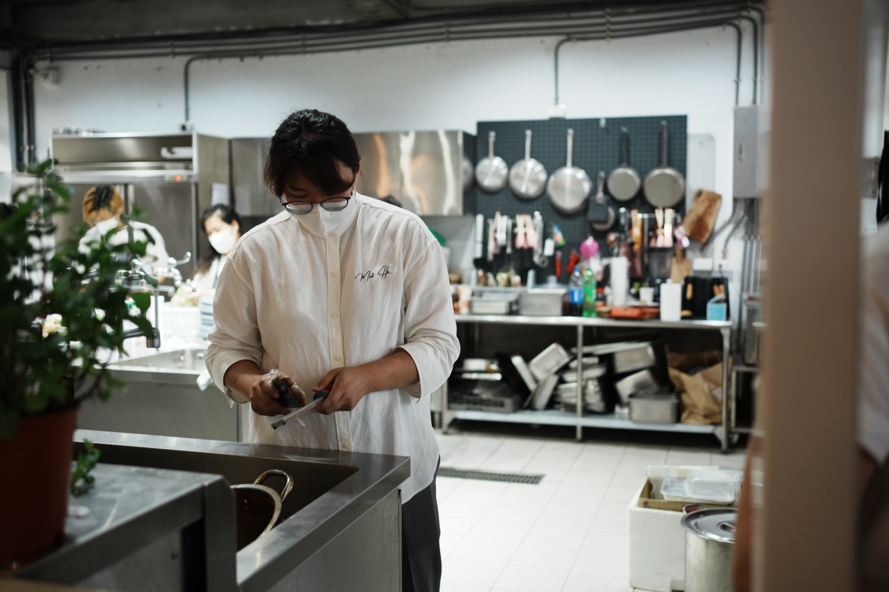
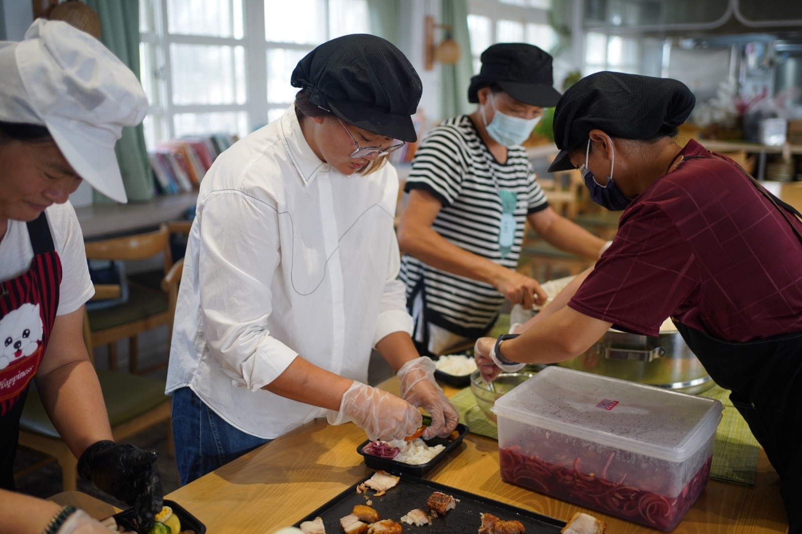
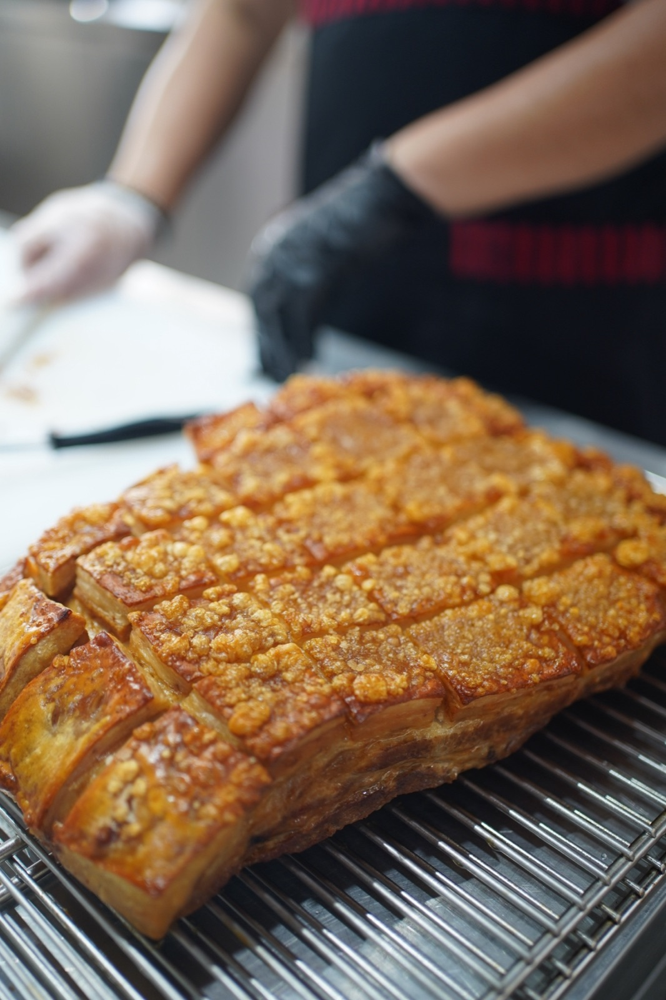
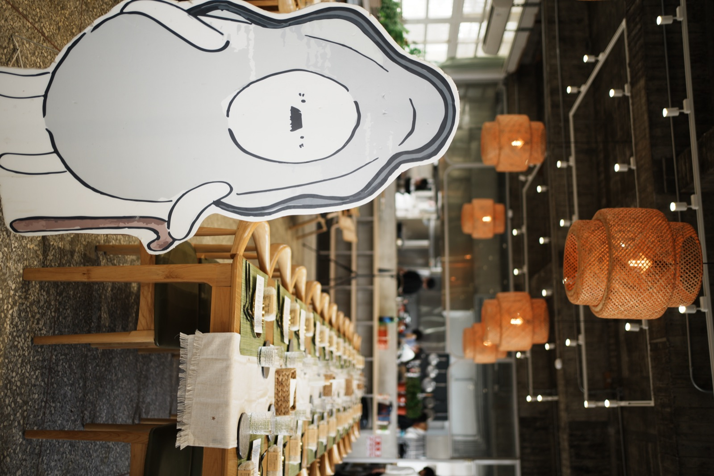

傑弗德不是只替地方做一份菜單，而是把口湖的環境故事、在地人力與餐飲營運重新組織成一套能持續運作的地方系統。

口湖長期面對地層下陷、人口外移及餐飲人才不足；場域擁有豐富農漁產與地方故事，卻缺少能長期營運的餐飲模式。
依需求建立永續餐會、觀光定食、學童及企業餐盒等多層產品，並以在地人力能學會、能穩定執行為前提設計菜單與流程。
場域逐步建立能服務旅客、學生、企業與地方居民的多元產品，在地工作者也能逐步參與日常營運。
01 ／ 案例背景
覓海小徑位於雲林口湖，是由舊國小場域延伸出的地方創生計畫，服務包含包棟體驗、地區食堂、永續餐會、學童與企業餐盒，以及食農教育。傑弗德進場服務約三年。
02
業主最早希望的是為場域設計出幾道能代表地方的特色料理。但傑弗德進場後看到的問題更根本：口湖長期面對地層下陷、人口外移及餐飲人才不足；場域雖有豐富的農漁產與地方故事，卻缺少一套讓旅客理解、在地居民能參與、並可長期營運的餐飲模式。
03
問題不是缺少特色菜，而是缺少一套「地方的人做得出來、不同客群願意購買、地方故事能被理解」的營運系統——這個判斷決定了後續產品與人才培訓的方向。
04
為什麼：旅客、學生、企業與地方居民的需求不同，單一菜單無法對應。
影響：依需求建立永續餐會、觀光定食、學童餐盒及企業餐盒。
為什麼：地層下陷、農漁產業與人口議題，需要被旅客理解，而不只是被聽說。
影響：地方故事透過餐桌被實際體驗，而非只作為背景說明。
為什麼：複雜料理需要長期依賴高階廚師，無法在地方持續運作。
影響：菜單以現有人力能學會、設備能負荷、日常能穩定執行為前提。
為什麼：系統要能持續運作，就不能只靠顧問在場時才成立。
影響：同步建立現場陪跑機制，逐步降低對外部人力的依賴。
為什麼：地方創生要能留在地方，執行者必須是在地的人。
影響：逐步建立由在地工作者主導的日常廚房及場域營運。
05
06
盤點口湖的環境限制、人力條件與可運用的地方資源。
設計永續餐會、觀光定食及餐盒等多層產品架構。
建立設備、流程、SOP，並訓練在地媽媽與工作者。
陪場域完成永續餐會與餐盒服務的實際運作。
約三年進場服務期間，持續協助系統穩定運作。
案例影像




07 ／ 成果
場域逐步建立能服務旅客、學生、企業與地方居民的多元產品；地方故事能透過餐桌、餐盒及活動被體驗，在地工作者也能逐步參與日常營運。
以上為質性觀察與階段性成果說明，實際執行內容依合約範圍為準，不代表對特定營業額、獲利或回本時間的保證。
如果你正在準備開店、轉型，或發現原本有效的方法逐漸失去作用，我們可以先從釐清問題開始。